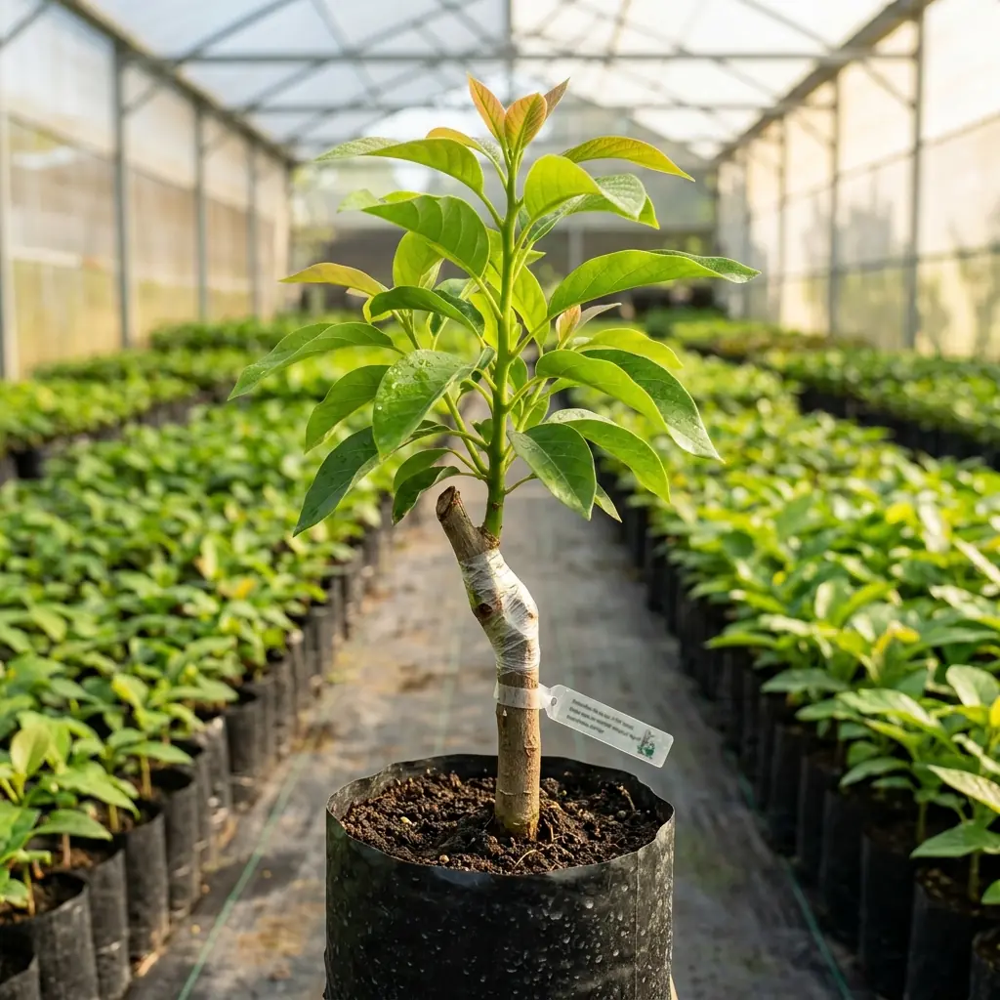

Berawal dari Semangat Menumbuhkan Kebaikan di Bumi Nganjuk
Astana Avocado bermula dari kecintaan mendalam terhadap tanaman buah alpukatkomoditas bernilai gizi tinggi yang digemari lintas generasi. Bertempat di Desa Trayang, Kabupaten Nganjuk, Jawa Timur, kami mengamati betapa banyak pecinta tanaman yang merasa kecewa karena membeli bibit yang asal-usul varietasnya tidak jelas atau perbanyakannya kurang sehat.
Menyadari bahwa menanam pohon adalah komitmen waktu dan tenaga selama bertahun-tahun, Astana Avocado hadir dengan komitmen sederhana: hanya menyediakan bibit yang jelas asal entresnya, sehat perakarannya, dan siap tumbuh prima di tempat pembeli.
"Menanam bibit alpukat bukan hanya sekadar urusan menaruh pohon ke dalam tanah, melainkan investasi harapan agar kelak dapat memetik buah yang lezat bersama keluarga atau menghidupkan perkebunan yang menguntungkan."
Kami mendampingi setiap pelanggan mulai dari pemilihan jenis varietas yang cocok dengan ketinggian tanah (mdpl), kebutuhan intensitas matahari, hingga petunjuk perawatan rutin.

1. Validitas Varietas
Kami mengambil entres hanya dari pohon indukan produktif yang buahnya telah terbukti nyata kualitas rasa dan bentuknya, bukan sembarang cabang pohon.
2. Kesehatan Batang & Akar
Sebelum dikirim, bibit dipastikan telah melalui masa sambungan sempurna (grafting union menyatu kokoh), daun hijau segar, dan bebas dari penyakit tular tanah.
3. Kejujuran Informasi
Kami tidak membuat klaim bombastis yang belum terbukti. Ketinggian bibit, umur pohon, stok yang siap, dan estimasi waktu berbuah dijelaskan apa adanya.
Kunjungi & Hubungi Kebun Kami
Alamat Pembibitan
Jl. Arjuna, Dsn. Nglerep, Ds. Trayang, Nganjuk 64395, Jawa Timur
WhatsApp Resmi
Surat Elektronik
astanaavocado@gmail.com
Konsultasi Terbuka untuk Setiap Kebutuhan Menanam
Baik Anda seorang pemilik rumah yang baru pertama kali ingin menanam pohon alpukat di halaman, atau pengelola kebun yang sedang merencanakan perluasan lahan buah, pintu diskusi kami selalu terbuka.
Tanyakan varietas apa yang paling adaptif dengan cuaca tempat tinggal Anda, seberapa banyak sinar matahari yang dibutuhkan, dan bagaimana cara membuat media tanam gembur yang disukai akar alpukat.